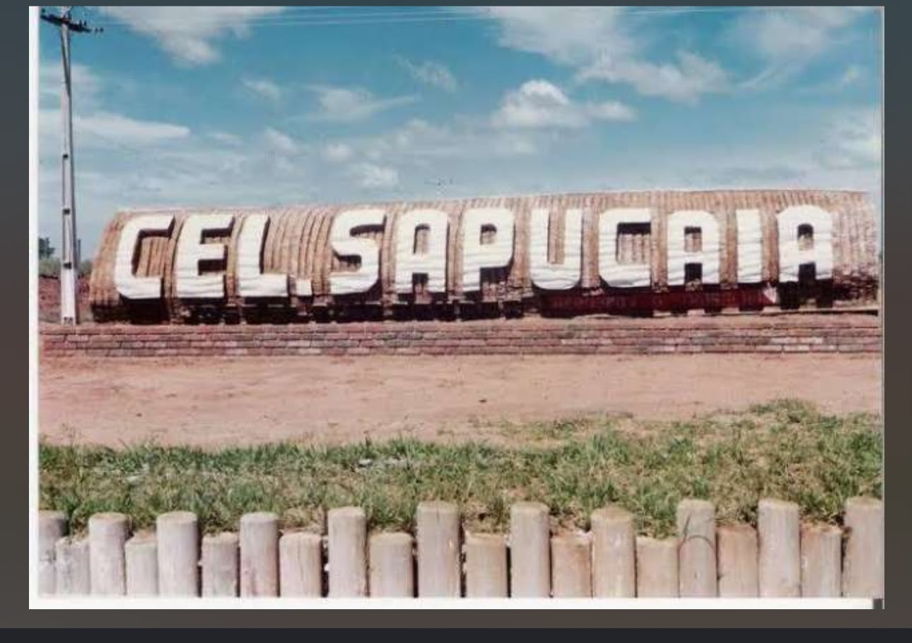
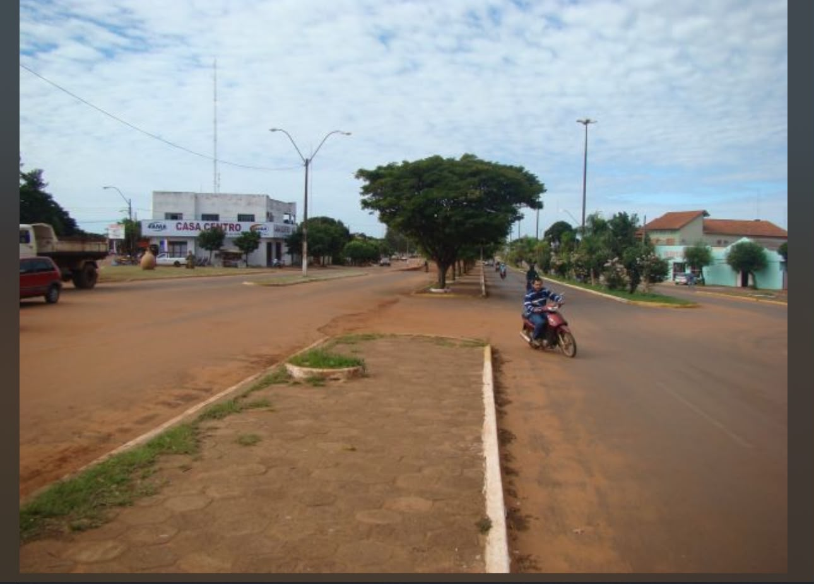
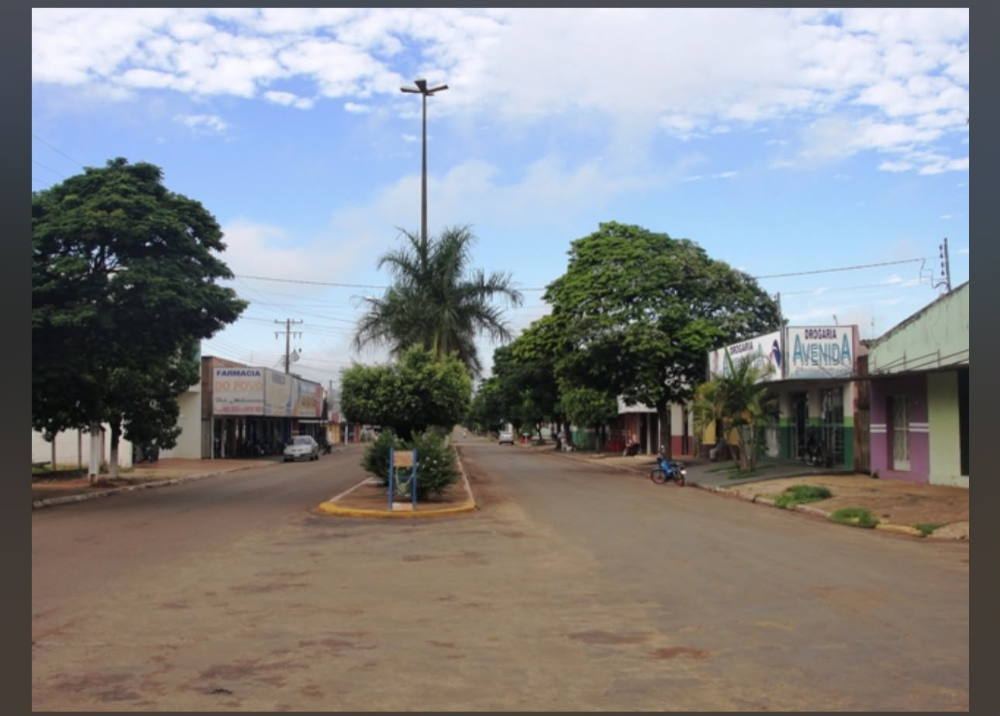
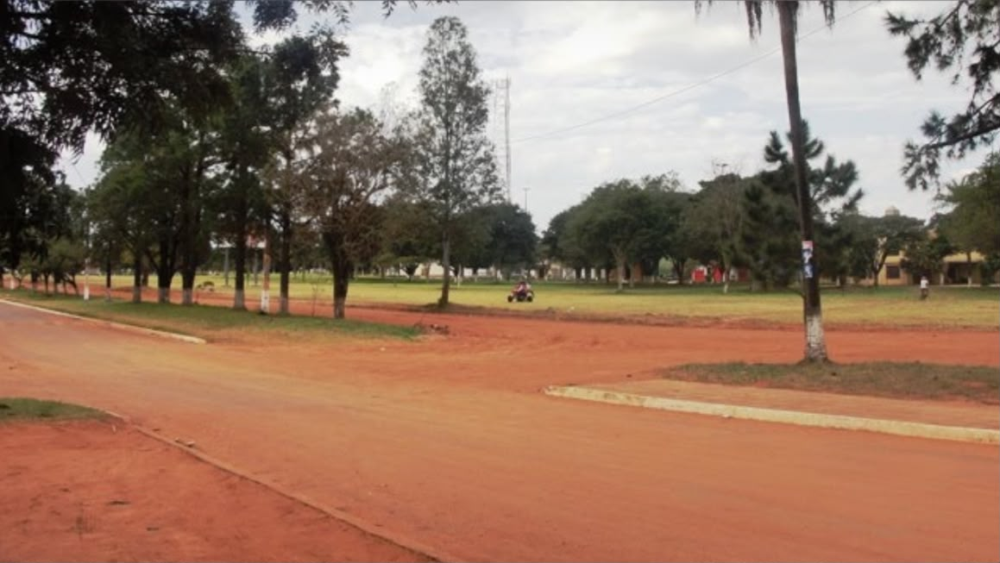
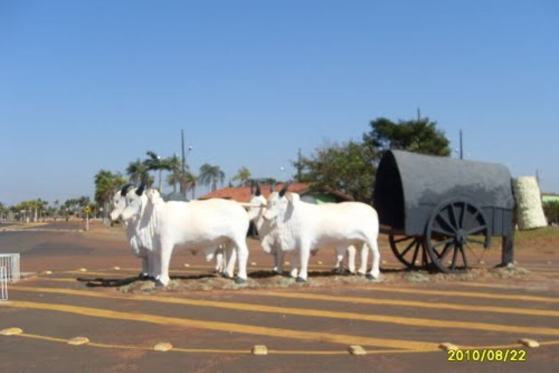
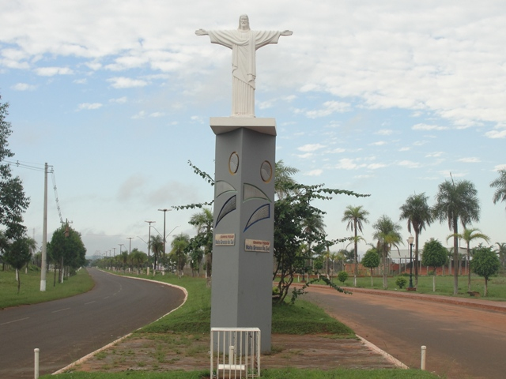
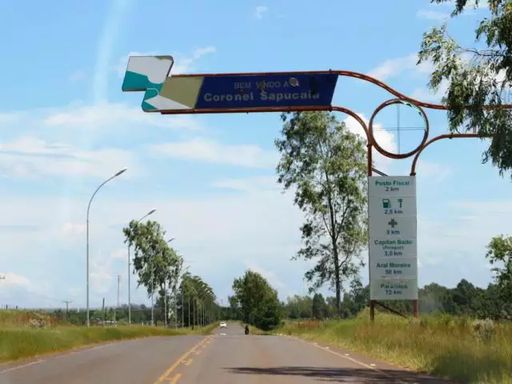
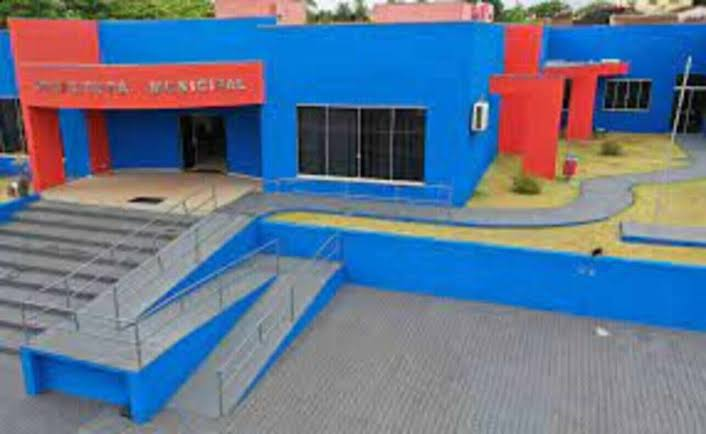

1. História de Coronel Sapucaia
A história de Coronel Sapucaia começa quando a região ainda era conhecida pelo nome de Nhu-Verá. O local fazia parte dos distritos chamados de “Patrimônio da União”, pertencentes ao município de Ponta Porã. Na época, a região era utilizada pela Companhia Mate Laranjeira Mendes como posto de abastecimento para a exploração da erva-mate, atividade que teve grande importância para o povoamento da área.
Com o passar do tempo, Nhu-Verá passou a ser reconhecido como Distrito de Paz Nhu-Verá, recebendo seus primeiros moradores, muitos deles imigrantes. Em 2 de dezembro de 1938, foi criada a certidão do Patrimônio da Povoação de Nhu-Verá, que passou a ser denominado Distrito de Paz de Antônio João, ainda pertencente ao município de Ponta Porã.
Em 1947, terminou o contrato da Companhia Mate Laranjeira Mendes com o estado de Mato Grosso, e as terras que eram ocupadas pela empresa começaram a ser liberadas para novos moradores. No ano seguinte, o Distrito de Paz de Antônio João passou por mudanças administrativas. Mais tarde, em 1967, foi oficializada a mudança do nome para Coronel Sapucaia, que passou a ser o terceiro nome da localidade.
O nome Coronel Sapucaia foi escolhido como homenagem ao coronel Orlando Olsen Sapucaia, relacionado à história militar da região. A partir de então, o nome passou a identificar o distrito, que posteriormente conquistou sua emancipação política.
A emancipação de Coronel Sapucaia aconteceu em 31 de dezembro de 1985, por meio da Lei Estadual nº 632/85. A instalação político-administrativa do município ocorreu em 1º de janeiro de 1987. Assim, a história da cidade passou por diferentes nomes — Nhu-Verá, Distrito de Paz Nhu-Verá, Distrito de Paz de Antônio João e, finalmente, Coronel Sapucaia — até chegar ao município que conhecemos atualmente.
2. Localização e características
Coronel Sapucaia está localizada na região sul de Mato Grosso do Sul e possui uma característica muito importante: fica na fronteira seca com o Paraguai, tendo ligação direta com a cidade paraguaia de Capitán Bado. Essa localização influencia bastante a cultura, a circulação de pessoas e as relações econômicas da população.
De acordo com o IBGE, o município possui uma área territorial de aproximadamente 1.023,727 km². No Censo de 2022, foram registradas 14.289 pessoas, enquanto a estimativa populacional mais recente disponível no IBGE aponta cerca de 14.685 habitantes.
3. População
A população de Coronel Sapucaia é formada por pessoas com diferentes origens e culturas. Por ser uma cidade de fronteira, existe uma forte convivência entre costumes brasileiros e paraguaios.
No Censo de 2022, o município possuía 14.289 habitantes. A cidade apresenta uma população relativamente pequena quando comparada aos grandes municípios de Mato Grosso do Sul, mas possui uma importância regional por sua localização na fronteira.
4. Economia
A economia de Coronel Sapucaia possui relação com o comércio, agricultura, pecuária e agricultura familiar. O comércio local também é influenciado pela proximidade com o Paraguai e pela circulação de moradores entre os dois lados da fronteira.
Em 2025, o município apresentou um Plano de Desenvolvimento Municipal, elaborado com participação da Prefeitura, Sebrae/MS, Governo do Estado, setor produtivo e representantes da comunidade. O plano estabeleceu como algumas de suas prioridades o fortalecimento do comércio local, o incentivo à agricultura familiar, o empreendedorismo e a qualificação profissional.
Segundo o IBGE, o PIB per capita de Coronel Sapucaia foi de R$ 27.170,62 em 2023.
5. Cultura
A cultura de Coronel Sapucaia possui influência das tradições brasileiras e paraguaias. Por estar na fronteira, é comum encontrar costumes, músicas, comidas e formas de convivência que apresentam características dos dois países.
As tradições ligadas ao campo também fazem parte da identidade cultural do município. Eventos como festas, apresentações musicais e atividades relacionadas às tradições rurais ajudam a reunir a população e movimentar o comércio.
Em 2026, por exemplo, foi apresentada na Câmara Municipal uma proposta para realizar um rodeio durante as comemorações do aniversário da cidade, com a intenção de valorizar as tradições do campo e movimentar setores como comércio, alimentação, hospedagem e artesanato.
6. Educação
A educação também possui importância para o desenvolvimento de Coronel Sapucaia. O município possui escolas municipais e estaduais que atendem crianças e adolescentes.
Segundo informações divulgadas pela Prefeitura, a rede municipal alcançou nota 5,3 no IDEB de 2025, sendo o maior resultado registrado pela rede municipal na série histórica apresentada pelo município. A nota era de 3,2 em 2005 e foi aumentando ao longo dos anos, chegando a 5,3 em 2025.
O IBGE também registra uma taxa de escolarização de 93,17% para crianças de 6 a 14 anos, conforme o indicador disponível em sua página municipal.
7. Fronteira com o Paraguai
Uma das principais características de Coronel Sapucaia é sua localização na fronteira com o Paraguai. A cidade brasileira é ligada diretamente a Capitán Bado, formando uma área de intensa convivência entre brasileiros e paraguaios.
Essa proximidade influencia o comércio, os costumes e a cultura da população. Em eventos realizados em Coronel Sapucaia, é comum haver a participação de autoridades e representantes de Capitán Bado, mostrando a relação existente entre as duas cidades.
8. História e memória da cidade
A preservação da história local é importante para que as novas gerações conheçam a origem do município. A Câmara Municipal possui registros históricos sobre a formação de Coronel Sapucaia, incluindo informações sobre o antigo povoado de Nhu-Verá e a exploração da erva-mate.
A Prefeitura também tem realizado ações relacionadas à memória da cidade. Em uma celebração recente, houve uma homenagem ao Coronel Orlando Olsen Sapucaia, personagem que deu nome ao município, além de atividades envolvendo estudantes, professores e moradores.
9. Desenvolvimento do município
Coronel Sapucaia vem buscando desenvolver diferentes áreas, como infraestrutura, educação, economia, agricultura e qualidade de vida.
O Plano de Desenvolvimento Municipal apresentado em 2025 estabeleceu quatro áreas principais: desenvolvimento econômico e empreendedorismo sustentável; infraestrutura, mobilidade e sustentabilidade urbana; educação, inovação e capital humano; e governança, gestão pública e inclusão social.
Também existem projetos relacionados à melhoria da infraestrutura e do lazer, como obras de pavimentação e uma proposta de parque no entorno da Lagoa Brasil.
Imagens de Coronel Sapucaia
Imagens antigas da cidade.




Imagens atuais de Coronel Sapucaia
Imagens atuais da cidade.




10. Conclusão
Coronel Sapucaia é uma cidade que possui uma história ligada à exploração da erva-mate, à ocupação da região e ao desenvolvimento da fronteira sul de Mato Grosso do Sul. Atualmente, o município possui cerca de 14,7 mil habitantes e tem sua economia relacionada principalmente ao comércio, à agricultura, à pecuária e à agricultura familiar.
Sua localização na fronteira com o Paraguai faz com que a cidade tenha uma cultura bastante característica, com influência brasileira e paraguaia. Além disso, a educação, a preservação da história e os projetos de desenvolvimento econômico e urbano fazem parte dos desafios e das transformações do município.